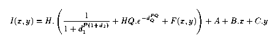
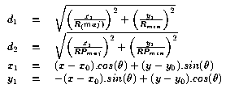
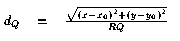

The profile is a rotated elliptical Lorentzian, with a low wide circular modified Gaussian and an empirical correction map. The Gaussian wing and/or the empirical map are sometimes not used. In many applications, the profile sits on a plane sloping background.

where
I(x,y) = the value of the star profile at pixel position x,y
H = the star peak Lorentz height (Gaussian and map are
an added fraction)
x0, y0 = the star centre position
A, B, C = the sloping background
The Lorentz profile:
Rmaj and Rmin are the major and minor axes of the ellipse which is rotated at theta degrees to the X axis. (Rmaj and Rmin are often referred to in the code as RX and RY.)
RPmaj and RPmin are the radii along the major and minor axes that the `power' of the profile is halved. (RPmaj and RPmin are often referred to in the code as PRX and PRY.)
P is often about 2.2; the RPs are usually about 6*(the Rs)
The circular modified Gaussian profile:

RQ is the radius, and PQ is the power of the modified Gaussian. HQ is the fraction of the main Lorentz profile peak that the Gaussian has. (HQ, RQ and PQ are often referred to in the code as QH, QR and QR.)
HQ is often zero, and is always small, of the order of 0.01; RQ is usually greater than 5*(the Rs); PQ is often about 2.
The empirical map:
F is an empirical function, the 'Profile Map'. This is expressed in terms of a fraction of the main Lorentz profile. The map is sampled on a grid which can be finer than the pixel grid. The grid has a spacing of int((1 + 2.9/min(Rmaj,Rmin))) times finer than the pixel grid. Thus the empirical function is sampled at spacings better than the Nyquist frequency. Unless the star is distorted, the values in this map are zero, and even if the star is distorted, they are usually very small, with peak values less than 1 percent of the main profile. The map is not an empirical representation of the image residuals from the analytical profile, but of those residuals averaged over the pixels. Thus depending on the pixel size relative to the star radius, the map values will change, unlike the analytical profile parameters.
In profiles where the radius is less than 3 pixels, full account is taken of the pixel undersampling in the analytical part and (where used) in the empirical part.